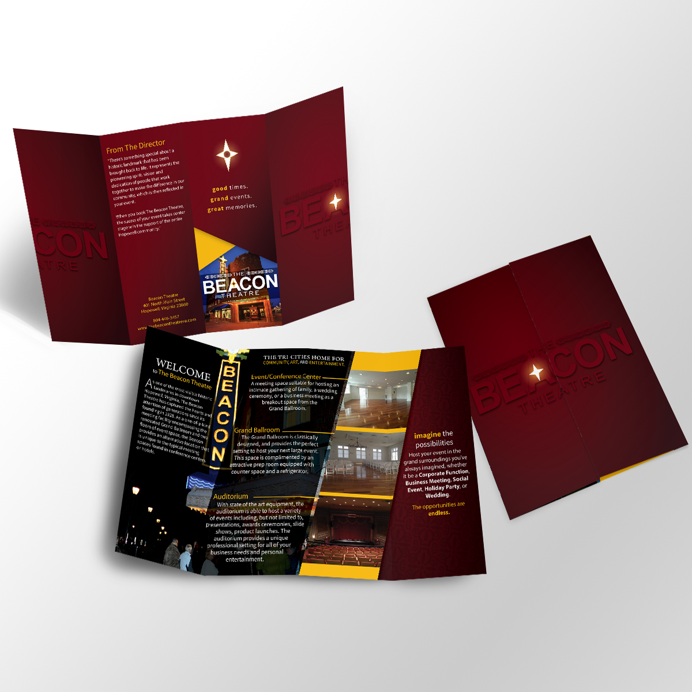
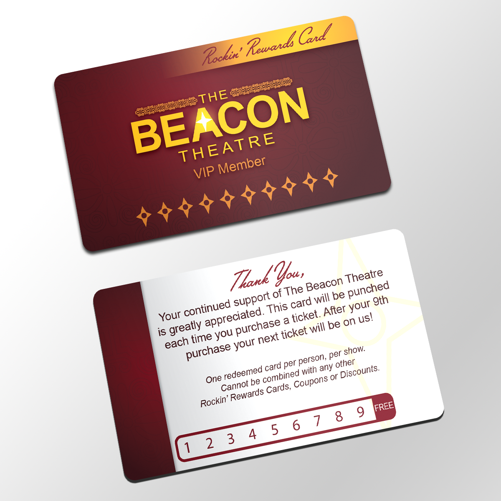
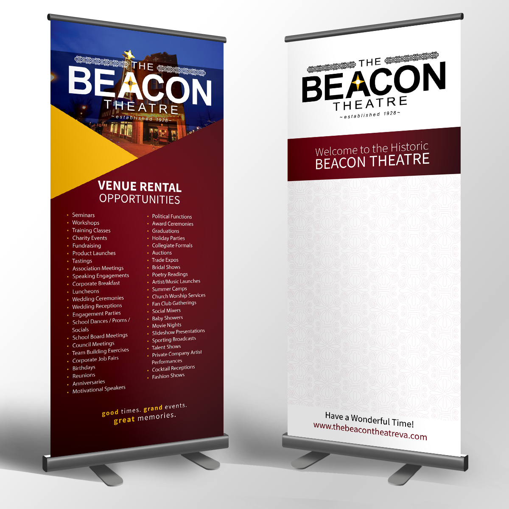

The Beacon Theatre
BRANDING | PRINT DESIGN
The Beacon Theatre is a historic landmark located in Hopewell, Virginia. The theatre has existed since the 1920s,
and in the last few years it has been heavily renovated. It is now fully functional once more, and many events are
hosted there. When they renovated, they wanted a whole new identity seperate from the theatre’s outdated logo and
promotional imagery. They were looking for something more modern and conventional, while staying true to the theatre’s historic roots.
I took inspiration from the theatre’s architecture itself after touring the entire building, and worked it into the logo. The typeface is big and bold to emulate the iconic beacon sign on the outside of the theatre, and the pattern
supplements it and provides a unique look which was inspired by the elegant
carvings bordering the theatre’s main stage.



PROJECT OUTCOME
The Theatre held a banquet for sponsors immediately after the rebranding was complete to great success. The new look was largely praised, and the promotional material
and information packets provided for the sponsors opened new doors for the Theatre right away. They have continued hosting concerts and renting out their ballrooms since,
and have even played host to the cast and crew of notable movies such as Imperium while they were filming in Hopewell.
WHAT I DID
- Redesigned the outdated logo and created an entire new identity for the theatre
- Created Brochures, an information package for sponsors, VIP cards, and other promotional print material
- Designed a large sign that stands in the theatre’s atrium, and features an interchangeable list that features all of the showings and times for the week.